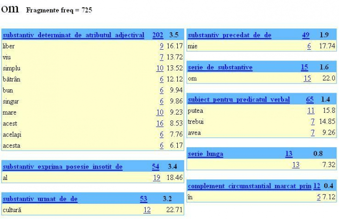
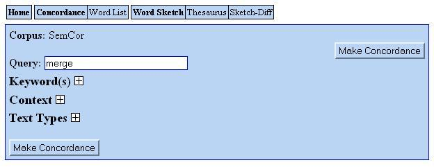
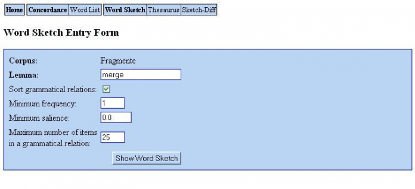

Data publicării: 05.12.2018
Autor articol: Corina Forascu
Sketch Engine (Kilgariff et al, 2004, 2014 ; Macoveici, 2005 – lucrare de licență coordonată de autoare) este un software de analiză și prelucrare a corpusurilor (colecții mari de texte) dezvoltat de Lexical Computing Limited începând cu anul 2003, cu scopul de a permite persoanelor care studiază comportamentul lingvistic (lexicologi, cercetători în lingvistică computațională și mai ales în lexicografia computațională, traducători sau persoane care învață limbi străine) să realizeze căutări cu relevanță lingvistică în colecții mari de texte. Disponibil pentru alte circa 90 de limbi, cum ar fi engleză – limba pentru care, bineînțeles, a fost întâi dezvoltat, franceză, germană, spaniolă, cehă şi chiar chineză, serviciul reprezintă un instrument ce poate fi utilizat pentru determinarea sensurilor unui cuvânt, pentru selectarea celei mai potrivite traduceri ale unui termen, pentru învăţarea vocabularului unei limbi străine sau pentru studiul operelor literare.
Ideea care a stat la baza proiectului Sketch Engine este tocmai generarea unor „liste de contexte” pentru fiecare cuvânt al unei limbi, pe baza unui corpus. Aceste liste au fost denumite Word Sketches (Kilgarriff, 2013) şi conţin, în plus, o succintă analiză a cuvântului, constând în descrierea comportamentului gramatical şi colocaţional al acestuia. Word Sketch descrie asocierile dintre cuvinte. Plecând de la termenul pentru care se realizează analiza, se folosesc şabloane pentru determinarea relaţiilor gramaticale în care este implicat şi a cuvintelor cu care este relaţionat. Exemplificăm în imaginea de mai jos funcţia Word Sketch din motorul Sketch Engine prin rezultate parţiale obţinute pentru substantivul „om”. Fiecare listă descrie tipul relaţiei şi conţine cuvintele care contribuie la realizarea respectivei relaţii, însoţite de frecvenţa de apariţie.

Deşi este un serviciu relativ nou, fiind finalizat pentru limba engleză în 2004, Sketch Engine şia dovedit deja utilitatea în cadrul a numeroase proiecte: editarea dicţionarului Macmillan English Dictionary for Advanced Learners, Oxford University Press, FrameNet, Collins, Chambers Harrap, Macmillan etc. şi sunt subiect de cercetare în multe universităţi din întreaga lume, cum ar fi crearea unui sistem de învăţare a limbii engleze în Universităţile din Asia. Un alt domeniu în care Sketch Engine se anunţă a fi o soluţie viabilă este cel al traducerilor. Funcţiile oferite de aplicaţie Concordance şi Word Sketch Differences (care vor fi ulterior descrise) pot indica traducerea cea mai potrivită pentru un cuvânt, dat fiind contextul în care se găseşte acesta.
Utilizat împreună cu WebBootCaT – un serviciu web capabil să colecteze rapid corpusuri de mari dimensiuni, folosind resurse web (documente) accesibile public (Baroni et al, 2006), Sketch Engine stă la baza unui proiect al Univeristăţii Ming Chuan din Taiwan, al cărui scop este facilitarea învăţării vocabularului unei limbi străine. A fost elaborat un algoritm de generare a propoziţiilor de tip fill in the blank. Acestea sunt propoziţii din care lipseşte un cuvânt. Ideea algoritmului este următoarea: se alege un cuvânt cheie şi se determină, prin intermediul Sketch Engine (Thesaurus), cuvinte similare acestuia (fie semantic, fie sintactic). Se caută apoi un context (o propoziţie) în care apare termenul de bază şi în care cuvintele determinate la pasul anterior nu sar potrivi din punct de vedere logic. Utilizatorului i se cere să completeze spaţiile libere cu varianta cea mai potrivită pentru a obţine o construcţie corectă.
De exemplu, se alege cuvântul „librărie”. Se generează termeni asemănători acestuia („magazin”, „farmacie”, „atelier”) şi un context corespunzător: „Cartea a fost cumpărată de la librăria din capătul străzii.” Propoziţia rezultată este următoarea:
„Cartea a fost cumpărată de la ______ din capătul străzii”.
Cu opţiunile: (a) farmacia; (b) atelierul; (c) librăria; (d) magazinul.
Ideea proiectului a apărut în urma unui experiment la care au participat 25 de persoane care nu cunoşteau limba chineză. Pe parcursul a şase săptămâni, ei au utilizat Sketch Engine pentru a determina răspunsul corect la întrebări de tipul celor descrise mai sus (fill in theblank). Testele finale au indicat o rată de îmbunătăţire a cunoştinţelor cuprinsă între 55% şi 95% faţă de testele de preevaluare.
Sketch Engine oferă, în momentul de faţă, şi alte facilităţi, cum ar fi Word List sau Thesaurus (descrise ulterior). Pentru a putea fi folosite, este necesar un corpus formatat conform specificaţiilor Sketch Engine şi un set corespunzător de reguli.
Pachetul soft e disponibil la adresa http://www.sketchengine.co.uk/ şi poate fi utilizat de oricine îşi crează un cont de utilizator (cu funcţionalitate şi durată în timp limitată – 30 de zile, pentru versiunea gratuită).
Sketch Engine oferă o serie de corpusuri gata formatate, dar şi posibilitatea de a încărca sau colecta (prin intermediul WebBootCaT) propriul corpus. Dintre corpusurile gata formatate menționăm British National Corpus (BNC), care conţine peste 100 milioane de cuvinte. Alte corpusuri disponibile sunt ukWaC (obţinut prin web crawling; peste 2 miliarde de simboluri), British Academic Written English Corpus, dar şi corpusuri în alte limbi.
Analiza unui corpus folosind Sketch Engine presupune parcurgerea următoarelor etape, care sunt detaliat descrise în continuare:
1. pregătirea corpusului;
2. pregătirea fişierului de configurare;
3. scrierea unei gramatici pentru generarea de Word Sketches; aceasta implică definirea unor relaţii între cuvinte şi editarea corespunzătoare a fişierului care le conţine;
4. încărcare celor trei fişiere în Sketch Engine şi folosirea funcţiilor oferite de serviciul web.
Rezultatele obţinute prin Sketch Engine sunt datorate unui sistem de procesare a corpusului foarte complex, care înglobează operaţii de căutare, sortare, calcul de frecvenţă sau de relevanţă a colocaţiilor unui cuvânt. Acesta este independent de limba în care este scris textul, însă pentru a putea fi folosit pentru limba respectivă, trebuie să existe un corpus adnotat corespunzător şi un set de reguli care să descrie relaţiile gramaticale specifice limbii.
Pentru a fi util din punct de vedere al analizei lingvistice, un corpus (o colecţie de texte, memorată şi prelucrată în scopul cercetării lingvistice) trebuie să fie suficient de mare încât să permită generalizări, dar şi să conţină toate varietăţile relevante ale vocabularului limbii respective. Trebuie să fie conceput în aşa fel încât pe baza lui să se poată construi gramatici, dicţionare, tezaure şi alte materiale referitoare la limbă. Un astfel de corpus se numeşte corpus de referinţă.
În cazul Sketch Engine, corpusul prelucrat corespunzător se află în fişierul de intrare. Acesta conţine text ASCII şi trebuie să fie în format vertical (sau WPL – wordperline). Cuvintele sunt scrise în coloană, pe fiecare linie aflânduse un cuvânt, un număr sau un semn de punctuaţie. Eventualele adnotări opţionale ataşate fiecărui cuvânt apar pe aceeaşi linie cu acesta, separate printrun caracter „tab”. De exemplu, textul
„Dintre sute de catarge
Care lasă malurile,
Câte oare le vor sparge
Vânturile, valurile?”
are următorul aspect, în format WPL, respectiv în format adnotat la lemă şi partea de vorbire, conform cu specificaţiile MULTEXTEast Morphosyntactic, versiunea 3.09:
| Dintre Sute de catarge Care lasã malurile , Câte Oare Le vor sparge Vânturile , valurile ? |
Dintre Spsa dintre sute Mcfpln sută de Spsa de catarge Ncfpn catarg Care Pw3r Care lasã Vmip3p lasã malurile Ncfpry mal , , , Câte Rw câte oare Rw oare le Pp3fpaw el vor Va3p vrea sparge Vmnp sparge Vânturile Ncfsry Vânturile , , , ??? |
Pentru adnotările structurale se folosesc taguri XML. Formatul textului este cel descris în cadrul IMS Corpus Workbench, la Universitatea din Stuttgart (Christ, 1994). Corpusul este adnotat atât poziţional, cât şi structural.
Adnotarea poziţională se referă la fiecare simbol („poziţie” în corpus) şi constă în asocierea a două atribute: partea de vorbire (POS) şi lema. Atributele apar pe aceeaşi linie cu simbolul căruia îi sunt ataşate, fiind despărţite de acesta şi între ele printreun caracter „tab”.
Adnotarea structurală reprezintă marcaje care delimitează blocuri de text: paragrafe, propoziţii, secvenţe de mici dimensiuni cu anumite proprietăţi specifice. Au forma tagurilor din limbajul XML, fiecare structură fiind poziţionată între două taguri cu aceeaşi denumire (închis şi deschis).
Fişierul text care conţine corpusul trebuie să fie însoţit de un fişier de configurare, necesar pentru localizarea acestuia, pentru specificarea unor informaţii privind modul de afişare (codificarea, limba, tipul structurilor şi felul în care sunt gestionate), dar şi pentru unele precizări legate de adnotări şi regulile gramaticale.
Fişierele de configurare sunt fişiere text în format ASCII. Denumirea fişierului este unică, fiind folosită pentru identificarea acestuia în întregul sistem. Configuraţia constă întro serie de perechi atributvaloare, fiecare scrisă pe o linie separată. Primul cuvânt de pe linie reprezintă denumirea unei opţiuni şi e scris cu majuscule. Urmează valoarea asociată opţiunii, încadrată de ghilimele duble. Atunci când valoarea nu conţine nicio majusculă, ghilimelele pot lipsi.
Generarea de Word Sketches presupune construcţia unei gramatici. O gramatică este o colecţie de definiţii pe baza cărora sistemul poate identifica eventualele relaţii gramaticale ce se stabilesc între termenul căutat şi celelalte cuvinte. Cuvântulcheie e indicat de prefixul „1:”, iar cel cu care vrem să îl relaţionăm prin intermediul şablonului e prefixat de „2:”. Atributul „tag” este implicit şi poate fi omis în scrierea unei expresii booleene (exceptând disjuncţiile). O definiţie poate să aibă asociate mai multe reguli, dacă toate corespund aceleiaşi relaţii gramaticale. Este o situaţie frecvent întâlnită în cazul limbii române, unde topica părţilor de propoziţie nu este foarte strictă în cadrul unei fraze.
Aceste gramatici, bazate pe şabloane (patternmatching), sunt imperfecte. Un text în limbaj natural, de mari dimensiuni, va fi întotdeauna mult prea complex pentru ca regulile respective să acopere toate situaţiile care apar. Sketch Engine înlătură această problemă prin selectarea doar a relaţiilor gramaticale prezente de un număr suficient de mare de ori (excepţiile – formulări atipice, eventuale exprimări incorecte – nu afectează rezultatele). În consecinţă, acurateţea definiţiilor poate fi îmbunătăţită până la o anumită limită, după care modificările nu mai sunt vizibile.
Relaţiile pot fi definite prin intermediul expresiilor regulate, iar pentru a facilita citirea şi înţelegerea lor, se folosesc macrouri scrise în limbajul m4 (Kernighan & Ritchie, 1977). Pe măsură ce gramatica este extinsă pentru a acoperi noi relaţii şi sunt definite noi şabloane pentru fiecare dintre acestea, se va observa, cu siguranţă, repetarea unora din şabloane. Pentru a menţine gramatica simplă şi uşor de întreţinut şi folosit, se pot defini macrouri în limbajul m4 pentru fiecare element utilizat de mai multe ori. m4 este un limbaj de procesare a macrourilor, operaţia sa de bază fiind preluarea unui text de intrare şi copierea acestuia întrun text de ieşire. Textul de intrare, compus din simboluri alfanumerice, este citit caracter cu caracter, iar în momentul în care şirul de litere obţinut corespunde unui macro, numele macroului e înlocuit cu definiţia sa.
Concordanţa este un dicţionar relativ la unul sau mai multe texte (de obicei ale unui singur autor), format din totalitatea lemelor conţinute în textul dat, ordonate alfabetic şi însoţite de informaţii precum categoria gramaticală, frecvenţa absolută şi relativă, indicarea contextului fiecărei forme flexionare. Sketch Engine dispune de un mecanism complex de generare a concordanţelor, ce oferă rezultate adaptate perfect cerinţelor utilizatorului. O căutare simplă, care întoarce toate rezultatele găsite pentru un anumit termen specificat, necesită simpla introducere a termenului respectiv în căsuţa etichetată cu Query. Interogarea se poate realiza şi pentru construcţii mai elaborate, nu doar pentru un cuvânt.

Dacă se dispune de un corpus lematizat, interogarea poate fi scrisă pentru lema corespunzătoare cuvântului. De exemplu, pentru cuvântul „mers”, Sketch Engine va genera o concordanţă cuprinzând următoarele:
- mers, merg, merge, meargă, mergeţi, mergând – verbe;
- mers, mersul – substantive;
Pentru o căutare mai rafinată, aplicaţia prezintă diverse opţiuni grupate în trei secţiuni: Keyword, Context şi Text Type. Secţiunea Keyword prezintă opţiuni disponibile pentru corpusuri adnotate la lemă şi partea de vorbire pentru fiecare cuvânt. Căutarea se va realiza după anumite criterii, în funcţie de opţiunile exprimate de utilizator. Secţiunea Context permite utilizatorului limitarea căutării la un anumit context sau tip de text. Se poate preciza partea stângă şi/sau dreaptă a contextului în care se află cuvântul, întrun interval de până la 15 termeni de fiecare parte (valoare specificată prin intermediul Window size). Secţiunea Text Type permite limitarea căutării la o anumită porţiune a corpusului. Opţiunea depinde de compoziţia corpusului şi de informaţiile din antet. De exemplu, în cadrul corpusului folosit pentru acest studiu sunt delimitate cele trei volume ale romanului, care pot fi incluse sau excluse din căutare prin intermediul unui identificator unic asociat fiecăruia.
Funcţia Word List permite specificarea rapidă a anumitor constrângeri asupra interogării. Rezultatele conţin o listă de perechi valoare – frecvenţă, iar vizualizarea concordanţelor se realizează prin simpla apăsare pe cuvântul respectiv. Interfaţa intuitivă simplifică mult procesul de scriere a interogărilor, aşa cum este pus la dispoziţie de funcţia Concordance (nu mai puţin utilă, însă cu siguranţă mai complexă). Căutarea se poate realiza în interiorul unui corpus sau al unui subcorpus al acestuia, care poate fi creat instantaneu, dacă nu exista anterior. Din meniul Attribute se alege elementul pentru care este scris şablonul (tag, lemma sau valoarea implicită, word).
Funcția Word Sketch este principala funcţie a Sketch Engine, şi motivul care a stat la baza construirii aplicaţiei. Aceasta permite generarea de Word Sketches, descrieri succinte ale comportamentului gramatical şi colocaţional al cuvintelor – conform imaginii (capturii de ecran) de mai jos.

Interfaţa permite introducerea unei leme şi precizarea a diferite opţiuni pe baza cărora vor fi generate rezultatele. Relaţiile pot fi sortate sau nu, se poate seta o frecvenţă sau o valoare minimă a coeficientului salience pentru fiecare cuvânt. Este permisă şi precizarea numărului maxim de elemente care pot intra întro relaţie gramaticală. Rezultatele sunt afişate în liste care identifică tipul relaţiei stabilite şi frecvenţa apariţiei fiecărui termen în relaţia respectivă.
WebBootCaT este un serviciu web capabil să colecteze rapid corpusuri de mari dimensiuni, folosind resurse web (documente) accesibile public. Utilitatea sa e evidenţiată mai ales în cadrul proiectelor pe termen scurt, cum ar fi realizarea unei traduceri sau pregătirea materialului didactic. Proiectul, finalizat în 2004 (Baroni et. al., 2006), are la bază următoarea idee: se selectează câţiva termeni de căutare (seeds), se trimit interogări cu aceşti termeni către Yahoo! şi se descarcă paginile rezultate în urma căutarii. Se creează, astfel, o primă versiune a corpusului, care poate fi îmbunătăţită prin compararea vocabularului cu unul de referinţă şi extragerea automată a termenilor corespunzători. Procesul poate fi iterat folosind ca termeni de căutare noile cuvinte, obţinânduse astfel un corpus specializat. Serviciul furnizează rezultate la fel de performante indiferent de limbă sau de nivelul de pregătire al utilizatorului, singura cerinţă fiind completarea unui câmp cu un termen pe baza căruia se colectează corpusul. Fişierul rezultat este disponibil în două variante: ca un text unitar, aşa cum arată pe pagina web de pe care a fost preluat, sau direct în format WPL. Sketch Engine poate prelua direct de pe web corpusul rezultat, nefiind nevoie de descărcarea şi reîncărcarea acestuia.
Una din facilităţile oferite de WebBootCaT este lematizarea şi adnotarea automată a corpusului, pentru limbile pentru care există instrumente de procesare care pot fi integrate.
Pe parcursul testării aplicaţiei şi dezvoltării regulilor gramaticale, sau folosit mai multe corpusuri româneşti, de dimensiuni şi caracteristici diferite. Primul, din punct de vedere cronologic, a fost construit pe baza traducerii romanului „1984” al lui George Orwell. Al doilea este derivat din varianta română a corpusului „SemCor” (o colecţie de 352 de texte, creată la Universitatea Princeton). Traducerea sa realizat la noi în facultate.
După prelucrarea celor două corpusuri, dimensiunile acestora nu depăşesc 200 000 de simboluri. Acesta a fost unul din motivele pentru care sa optat pentru utilizarea unui al treilea corpus, creat pe baza romanului „Cel mai iubit dintre pământeni”, de Marin Preda şi intitulat „Fragmente”. Pe lângă dimensiunea apreciabilă (aproape 500 000 simboluri, adică maximum permis de Sketch Engine), un argument în plus îl reprezintă faptul că, spre deosebire de celelalte texte, romanul nu este o traducere. Limbajul surprinde perfect situaţiile care pot să apară în limba română, atât în comunicarea scrisă, cât şi în cea verbală (prin secvenţe de dialog între personaje).
Iniţial, studiul a urmat colectarea unui corpus cu WebBootCaT, însă ideea a fost abandonată din mai multe motive. Dimensiunile textelor variau mult, în funcţie de termenii introduşi ca seed, însă nu depăşeau 65000 de cuvinte (ca limită inferioară, 2000 de cuvinte). Aceasta ar fi presupus realizarea mai multor căutări, colectarea mai multor corpusuri şi unirea lor. Cuvintele de bază ar fi trebuit să fie, însă, diferite, pentru că aceleaşi cuvinte generează aceleaşi pagini din partea motorului de căutare Yahoo!. Cuvinte de bază diferite înseamnă, deja, o alterare a omogenităţii corpusului. Problema ar fi putut fi rezolvată (introducerea de cuvinte din acelaşi domeniu sau câmp semantic etc.), însă obstacolul peste care nu sa putut trece la reprezentat calitatea textelor găsite. Multe din paginile web de pe care este colectat corpusul sunt bloguri, articole din ziare însoţite de comentarii ale cititorilor, şi chiar forumuri. Condiţiile minime impuse la construirea unui corpus – textul să fie corect din punct de vedere gramatical şi lipsit de cuvinte aparţinând altor limbi – nu ar mai fi fost respectate. Sa ales, astfel, varianta construirii corpusului pe baza romanului „Cel mai iubit dintre pământeni”.
Înainte de prelucrare, corpusul „1984” cuprindea aproximativ 250 000 de simboluri (tokens) în limba română. Fişierul XML, în care se aflau atât textul în engleză, cât şi traducerea sa în română, conţinea peste 32000 linii şi 11,8 milioane caractere. Dimensiunile „SemCor” erau considerabil mai mari: 800000 de simboluri pentru limba română, un fişier XML cu peste 41000 linii şi 25 milioane de caractere.
Pentru a putea fi analizate cu Sketch Engine, corpusurile trebuie să se afle în fişiere text în format WPL şi să fie adnotate la lemă şi partea de vorbire. Corpusurile „1984” şi „SemCor” au trecut prin mai multe etape de prelucrare pentru a îndeplini aceste condiţii:
- eliminarea tagurilor şi a adnotărilor poziţionale vechi (prin intermediul expresiilor regulate scrise în Perl);
- împărţirea textului în mai multe fişiere text în format UTF8, de dimensiuni mai mici;
- trimiterea acestor fişiere, ca parametru, unui program Java, care să apeleze serviciul web TTL (Ion, 2007);
- adnotarea corpusului la lemă şi partea de vorbire, realizată de către TTL;
- preluarea de către aplicaţia Java a rezultatelor furnizate de serviciul web;
- refacerea fişierului adnotat corespunzător, pentru a putea fi încărcat în Sketch Engine.
Pentru analiza corpusului românesc, a fost nevoie de construirea unei gramatici care să reflecte relaţiile care se stabilesc între cuvinte. Spre deosebire de limba engleză, în limba română topica părţilor de propoziţie este mai puţin strictă. Gradul sporit de flexibilitate ridică probleme în procesul de identificare şi captare a automatismelor, fiind nevoie, în general, de mai multe reguli pentru definirea unei relaţii, pentru a acoperi toate situaţiile posibile. Lucrarea se axează pe analiza sintactică a substantivului, verbului şi adjectivului. Pentru descrierea situaţiilor în care se pot afla acestea, a fost nevoie şi de definirea şi uneori, de analiza altor părţi de vorbire (adverbul, numeralul, prepoziţia etc.). Gramatica este compusă din 25 de reguli şi 68 de şabloane. Spre comparaţie, gramatica limbii cehe, cea mai performantă dintre cele construite, conţine 23 de reguli. Avantajul pe care îl are este acela că dispune de un set de etichete (taguri) care permit identificarea exactă a fiecărei categorii gramaticale şi realizarea de comparaţii între valorile acestora. Au fost definite doar o parte din părţile de vorbire (cele utilizate mai des): substantivul, verbul, adjectivul, pronumele, articolul şi „particula”, o denumire utilizată de MEM pentru a desemna cuvintele auxiliare care intră în alcătuirea unei părţi de propoziţie („nu”, „a”, „să”, „fi”, „o”) . Marcarea lui „fi” ca particulă a generat o serie de probleme în procesul de construcţie a gramaticii, pentru că această etichetarea nu este consistentă în măsura în care ar trebui să fie: „fi” este şi particulă, şi verb auxiliar. Celelalte părţi de vorbire au fost identificate prin asocierea unui atribut cu o expresie regulată.
Rezultatele obţinute la rularea motorului de căutare cu regulile scrise pentru limba română sunt superioare celor raportate la adaptarea pentru prima oară a SkE pentru alte limbi, cum ar fi spaniola sau italiana.
Performanţele sunt apreciabile, în condiţiile în care dimensiunile corpusului de care se dispune pentru limba română sunt considerabil mai mici decât cele ale corpusurilor utilizate pentru construirea gramaticilor celorlalte limbi. Motivele sunt obiective: licenţa academică oferită de SkE permite stocarea pe server a maximum 500 000 de simboluri (tokens), numărul este net inferior dimensiunilor corpusurilor existente pentru celalte limbi. Chiar şi în aceste condiţii, sa reuşit identificarea celor mai importante relaţii care se stabilesc între cuvinte în cadrul unei fraze: relaţia subiect – predicat verbal / nominal, substantiv – atribut adjectival / substantival, verb – complement direct / indirect / circumstanţial, dar şi relaţiile dintre cuvinte şi prepoziţiile care le însoţesc, relaţii de simetrie etc. Studiul se axează pe analiza sintactică a substantivului, verbului şi adjectivului, însă surprinde şi comportamentul altor părţi de vorbire care sunt relaţionate, în anumite contexte, cu acestea.
Rezultatele obţinute în această primă fază a studiului demonstrează că Sketch Engine poate fi un instrument util şi pentru analiza limbii române (Macoveiciuc & Kilgarriff, 2010).
Încă din acest stadiu de dezvoltare a gramaticii, aplicaţia oferă suport pentru detectarea sensului corect al unui cuvânt întrun anumit context, prin generarea concordanţelor şi a Word Sketches. Beneficiind şi de un corpus de dimensiuni corespunzătoare, facilitatea ar putea fi exploatată pentru construcţia dicţionarelor explicative ale limbii române.
Un alt domeniu în care Sketch Engine ar putea fi utilizat cu succes este cel al traducerilor, pentru că permite selectarea celui mai potrivit sens din mai multe variante. Aspectele mai dificile, când intră în discuţie realizarea unei traduceri, sunt cele legate de acordurile între părţile de vorbire, desinenţe şi cuvinte de legătură. SkE oferă o imagine de ansamblu a contextelor în care se poate afla un cuvânt, astfel încât este posibilă detectarea imediată a situaţiilor similare cu cele pentru care se doreşte realizarea traducerii prin simpla vizualizare a listei de concordanţe şi, ulterior, a analizei realizate prin intermediul funcţiei Word Sketch. De asemenea, funcţia Sketch Differences permite compararea a două cuvinte şi detectarea contextelor comune în care apar, dar şi a acelora care sunt caracteristice numai pentru unul din cei doi termeni.
Vocabularul limbii române poate fi învăţat mai uşor utilizând facilităţile puse la dispoziţie de Sketch Engine, cum ar fi funcţia Thesaurus. Lista generată va conţine o serie de cuvinte similare celui introdus de utilizator, fie că sunt sinonime, fie că se găsesc în vecinătatea termenului căutat.
Tot pentru învăţarea vocabularului, ar putea fi realizat un proiect asemănător celui demarat la Universitatea Ming Chuan din Taiwan, destinat generării de întrebări de tip fillintheblank. Utilizatorul i sar cere să completeze spaţiile libere din propoziţie cu cel mai potrivit cuvânt dintre 34 termeni asemănători.
Concordanţele din operele literare ar putea fi evidenţiate şi studiate mai uşor folosind Sketch Engine. Astfel, sar putea detecta simbolurile recurente dintro poezie sau miturile ilustrate întrun basm popular, pentru că toate se caracterizează prin frecvenţa mare în cadrul operei literare.
Un pas următor în dezvoltarea aplicaţiei lar putea reprezenta realizarea unei conexiuni între un corpus şi un dicţionar. Aceasta ar însemnă că fiecare cuvânt din cadrul corpusului ar avea ataşat un pointer către o definiţie din dicţionar, la fel cum fiecare termen din dicţionar ar conţine legături către mai multe contexte din cadrul corpusului în care se găseşte cuvântul respectiv. Conexiunea dintre cele două entităţi – corpus şi dicţionar – se realizează prin intermediul unei baze de date. O înregistrare trebuie să conţină cel puţin trei informaţii: o locaţie din cadrul corpusului (inclusiv analiza gramaticală asociată), un pointer la sensul din dicţionar al termenului corespunzător locaţiei şi un set de indicatori către o mulţime de colocaţii din cadrul corpusului în care cuvântul definit în dicţionar apare sub diverse forme.
În primă instanţă, baza de date este generată pe baza corpusului, deci pointerii la cuvintele din cadrul acestuia sunt imediat disponibili. Un rezumat de tip Word Sketch poate fi un exemplu de astfel de bază de date. Fiecare cuvânt reprezintă o legătură către un URL care conţine o listă de concordanţe asociată termenului respectiv
Referințe
- Marco Baroni, Adam Kilgarriff, Jan Pomikálek and Pavel Rychlý (2006). WebBootCaT: a web tool for instant corpora. In Proceeding of the EuraLex Conference, 2006, pp. 123–132
- Thorsten Brants (2000). TnT – A Statistical PartOfSpeech Tagger. Proceedings of the 6th Applied NLP Conference ANLP2000. Seattle, WA, pp 224231.
- Oli Christ (1994). A Modular and Flexible Architecture for an Integrated Corpus Query System. COMPLEX’94, Budapesta.
- Radu Ion (2007). Metode de dezambiguizare semantică automată. Aplicaţii pentru limbile engleză şi română. Teză de doctorat. Academia Romana, Bucureşti.
- Brian W. Kernighan, Dennis M. Ritchie (1977). The M4 Macro Processor. Technical report. Bell Laboratories, Murray Hill, New Jersey, SUA
- Adam Kilgarriff, Vít Baisa, Jan Bušta, Miloš Jakubíček, Vojtěch Kovář, Jan Michelfeit, Pavel Rychlý, Vít Suchomel. (2014).The Sketch Engine: ten years on. Lexicography, 1: 7-36, 2014.
- Adam Kilgarriff (2013). Terminology finding, parallel corpora and bilingual word sketches in the Sketch Engine. In Proceedings ASLIB 35th Translating and the Computer Conference, London, May 2013
- Adam Kilgarriff, Pavel Rychlý, Pavel Smrž, David Tugwell (2004). The Sketch Engine. Information Technology, 2004.
- Monica Macoveiciuc, Adam Kilgarriff (2010). The RoWaC Corpus and Romanian Word Sketches. In Multilinguality and Interoperability in Language Processing with Emphasis on Romanian, Dan Tufiş and Corina Forăscu (eds.) Romanian Academy Publishing House, Bucharest, 2010. ISBN: 978-973-27-1972-5, pp 149 – 166.